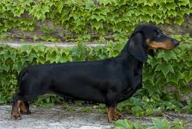

|  |
A tacskó változatainak eredete a régmúlt időkbe nyúlik vissza. Egyiptomban találtak olyan emlékeket, melyeken megtalálható ez a rövid lábú, hosszú hátú kutya. Származása vitatott; egyesek szerint a francia bassetek (szó szerint: alacsony kutya) rokona. Közkedvelt elnevezése a dakszli, amely az eredeti német névből, a dachshundból ered, amely borzkutyát jelent. Ez nem véletlen, hiszen zsákmányát a föld alá is követi. A tacskók remekül ásnak, így szinte lehetetlen kifutóban tartani őket. A tenyésztése során mind könnyedebbé és elegánsabbá vált fajta nagy népszerűségnek örvend. Becenevei: tacsi, dakszli.
A tacskó alapvetően vadászkutya, mindamellett nagyon jól alkalmazkodik a városi tartáshoz is. Kotorékeb, ezért aki erdőközelben tartja tacskóját, annak számolnia kell azzal, hogy elszökhet vadászni. A vadászatban az önállóság a legnagyobb erénye, ezért az életben is nagyon önálló és akaratos. Tartása következetességet igényel. Rövid lábai ellenére sportos és mozgékony. Makacs és önfejű természetű. Marmagassága: 16-26 cm, tömege: 3,6–9 kg. Három méret és három szőrváltozat elfogadott az FCI-fajta standard alapján. A méretek: standard, törpe, kaninchen. A három méretet a mellbőség alapján különböztetik meg. Szőrváltozatok: rövid szőrű, hosszú szőrű, szálkás szőrű. Az angolszász országokban a fajtastandard csak két méretet ismer el, a standard és a törpe méretet. A szőrváltozatok megegyeznek az FCI-standarddal. Várható élettartama: 12-16 év Mellkasa domború, hosszú hasa felhúzott. Mancsai szélesek, ívben hajlók, ujjai szorosan záródnak, karmai sötétek. Farka nem túl hosszú, a vége elvékonyodik. Feje megnyúlt, elvékonyodó. Orrtükrének színe a szőrzettől függően barnától feketéig változik. Állkapcsa erős, fogai ollós harapásúak.